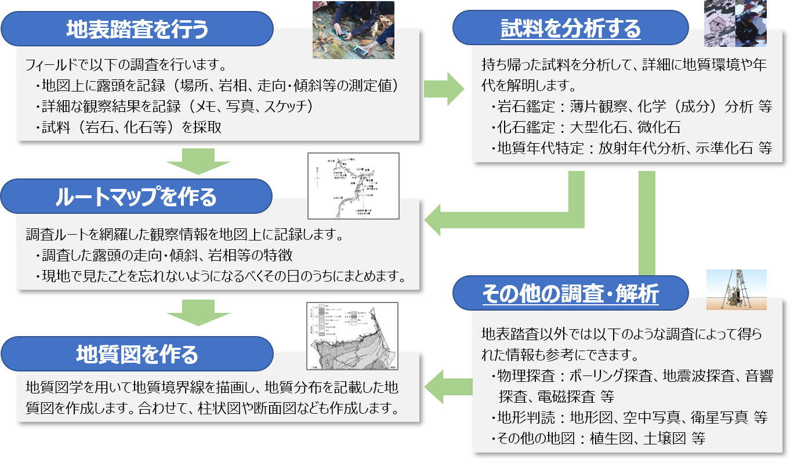
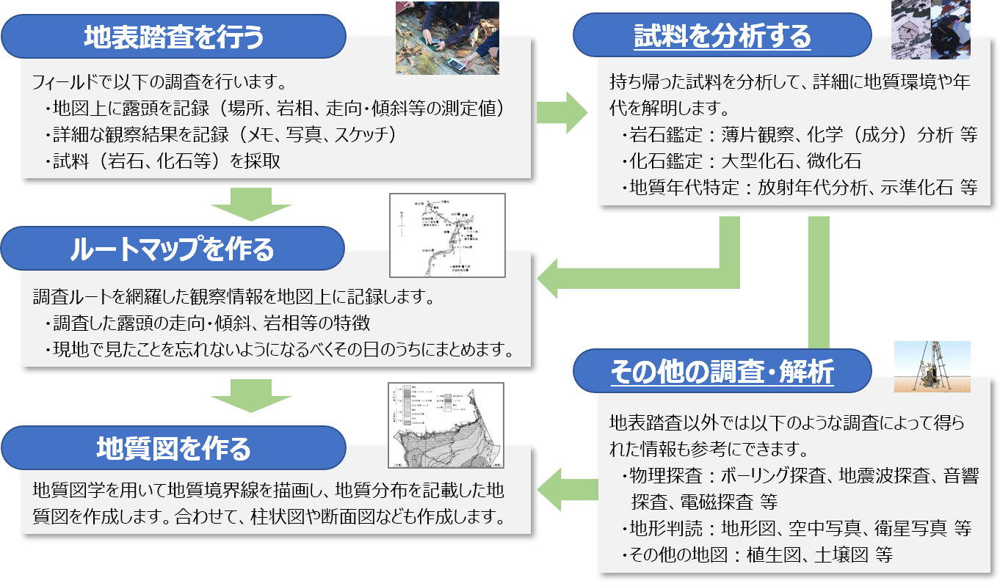

1-3. 地質図のつくり方
地質図は、下図で示したような流れで作成しますが、基本は以下の手順になります。
- 地表踏査を行う
- ルートマップを作る
- 地質図を作る
地表踏査で得られた観察結果やサンプルが直接証拠になり、それに地質図学や様々な状況証拠を加えて作成していきます。

- 「試料を分析する」の解説ページ
- 「その他の調査・解析」の解説ページ
次章では、実際の観察結果を基にした地質図の作成演習テキストを用意しています。
まずは、この演習問題を使って地質図を作成してみましょう。
地質図は、下図で示したような流れで作成しますが、基本は以下の手順になります。
地表踏査で得られた観察結果やサンプルが直接証拠になり、それに地質図学や様々な状況証拠を加えて作成していきます。

次章では、実際の観察結果を基にした地質図の作成演習テキストを用意しています。
まずは、この演習問題を使って地質図を作成してみましょう。